Windshield: Service and Repair
Windshield ReplacementNOTE:
- Put on gloves to protect your hands.
- Wear eye protection while cutting the glass adhesive with a piano wire.
- Use seat covers to avoid damaging the seat.
- When replacing a broken windshield, a commercially available windshield cutter can be efficiently used for cutting the adhesive. For details, follow the instructions of the tool manufacturer.
1. Remove these items:
- Cowl cover
- Rearview mirror
- Without automatic dimming mirror.
- With automatic dimming mirror.
- A-pillar trim, both sides.
- Roof moldings.
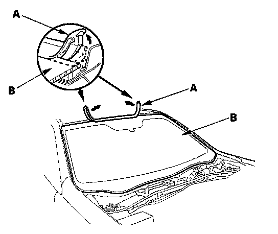
2. Remove the molding (A) from the upper edge of the windshield (B). If necessary, cut the molding with a utility knife.
3. If the old windshield will be reinstalled, make alignment marks across the glass and body with a grease pencil.
4. Pull down the front portion of the headliner. Take care not to bend the headliner excessively, or you may crease or break it.
5. Apply protective tape along the edge of the dashboard and body. Using an awl, make a hole through the rubber dam and adhesive from inside the vehicle at the corner portion of the windshield. Push a piece of piano wire through the hole, and wrap each end around a piece of wood.
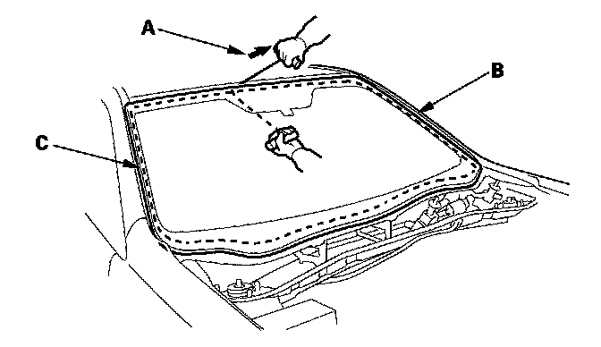
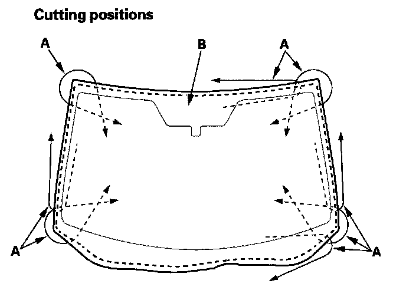
6. With a helper on the outside, pull the piano wire (A) back and forth in a sawing motion. Hold the piano wire as close to the windshield (B) as possible to prevent damage to the body and dashboard. Carefully cut through the rubber dam and adhesive (C) around the entire windshield.
7. Carefully remove the windshield.
8. With a knife, scrape the old adhesive smooth to a thickness of about 2 mm (0.08 in.) on the bonding surface around the entire windshield opening flange:
- Do not scrape down to the painted surface of the body; damaged paint will interfere with proper bonding.
- Remove the rubber dam and fasteners from the body.
9. Clean the body bonding surface with a sponge dampened in isopropyl alcohol. After cleaning, keep oil, grease and water from getting on the clean surface.
10. If the old windshield will be reinstalled, use a putty knife to scrape off the old adhesive, the clips the rubber dam, and the dashboard seal from the windshield. Clean the inside face and the edge of the windshield with isopropyl alcohol where new adhesive will be applied. Make sure the bonding surface is kept free of water, oil, and grease.
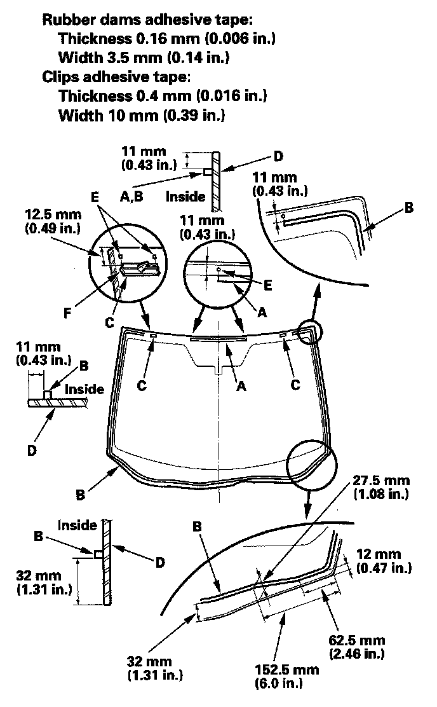
11. Attach the upper rubber dam (A), lower rubber dam (B), and clips (C) with adhesive tape to the inside face of the windshield (D) as shown:
- Be sure the rubber dam and clips line up with the alignment marks (E).
- Be sure the convex portion (F) of the left and right clips toward left.
- Be careful not to touch the windshield where adhesive will be applied.
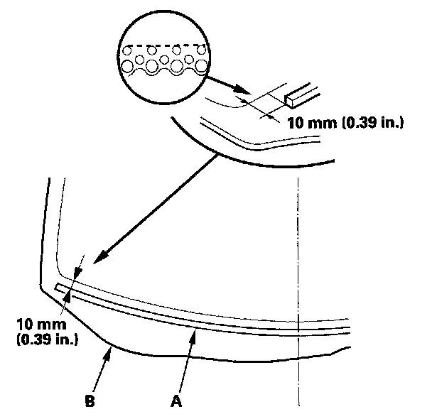
12. Attach the dashboard seal (A) with adhesive tape to the inside surface of the windshield (B) as shown.
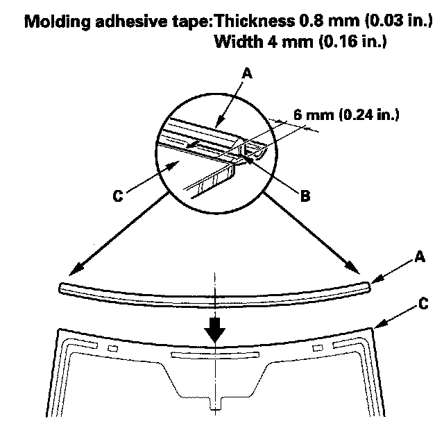
13. Attach the molding (A) with adhesive tape (B) to the upper edge of the windshield (C). Be careful not to touch the windshield where adhesive will be applied.
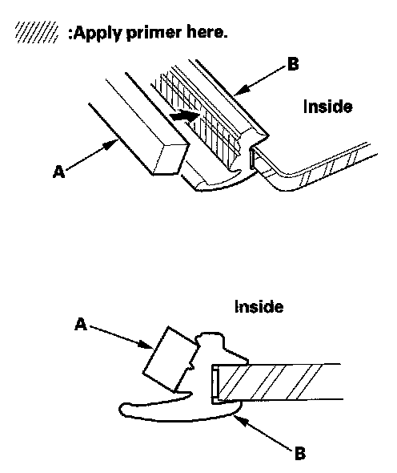
14. Attach the molding upper seal (A) with adhesive tape to the inside surface of the molding (B) as shown.
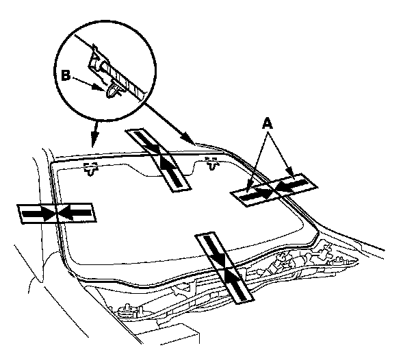
15. Set the windshield in the opening, and center it. Make alignment marks (A) across the windshield and body with a grease pencil at the four points shown. Make sure both clips (B) contact with the edge of the body holes. Be careful not to touch the windshield where adhesive will be applied.
16. Remove the windshield.
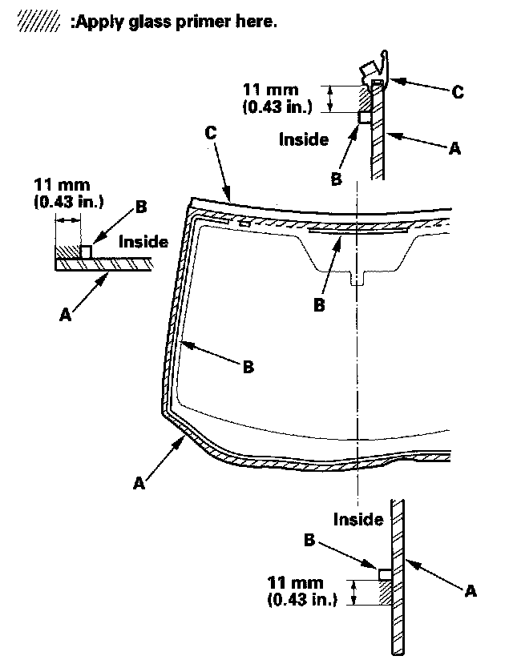
17. With a sponge, apply a light coat of glass primer around the edge of the windshield (A) between the dams (B) and molding (C) as shown, then lightly wipe it off with gauze or cheesecloth:
- Apply glass primer to the molding.
- Do not apply body primer to the windshield, and do not get body and glass primer sponges mixed up.
- Never touch the primed surfaces with your hands. If you do, the adhesive may not bond to the windshield properly, causing a leak after the windshield is installed.
- Keep water, dust, and abrasive materials away from primed surfaces.
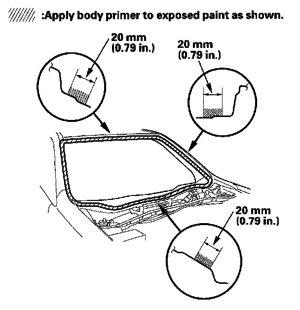
18. With a sponge, carefully apply a light coat of body primer to any exposed paint or metal around the flange where new adhesive will be applied. Let the primer dry for at least 10 minutes:
- Do not apply body primer to any remaining original adhesive on the flange.
- Be careful not to mix up the body and glass primer sponges.
- Never touch the primed surfaces with your hands.
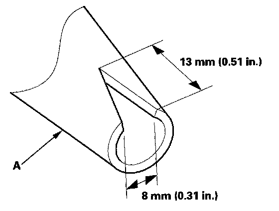
19. Cut a "V" in the end of the nozzle (A) on the adhesive cartridge as shown.
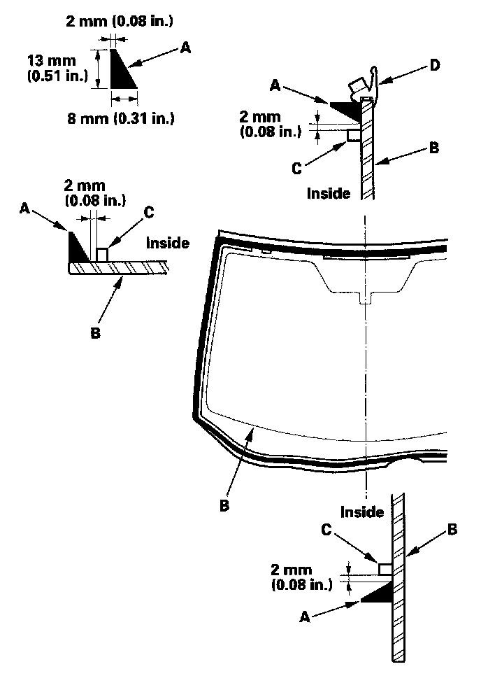
20. Pack adhesive into the cartridge without air pockets to ensure continuous delivery. Put the cartridge in a caulking gun, and run a bead of adhesive (A) around the edge of the windshield (B) between the dams (C) and molding (D) as shown. Apply the adhesive within 30 minutes after applying the glass primer. Make a slightly thicker bead at each corner.
21. Use suction cups to hold the windshield over the opening, align it with the alignment marks made in step 15, and set it down on the adhesive. Lightly push on the windshield until its edges are fully seated on the adhesive all the way around.
NOTE: Do not open or close the doors for about an hour until the adhesive is dry.
22. Scrape or wipe the excess adhesive off with a putty knife or towel. To remove adhesive from a painted surface or the windshield, wipe with a soft shop towel dampened with isopropyl alcohol.
23. After the adhesive has dried, spray water over the windshield and check for leaks. Mark leaking areas, and let the windshield dry, then seal with sealant. Let the vehicle stand for at least 4 hours after windshield installation. If the vehicle has to be used within the first 4 hours, it must be driven slowly.
24. Reinstall all remaining removed parts.
NOTE: Advise the customer not to do the following things for 2 to 3 days:
- Slam the doors with all the windows rolled up.
- Twist the body excessively (such as when going in and out of driveways at an angle or driving over rough, uneven roads).